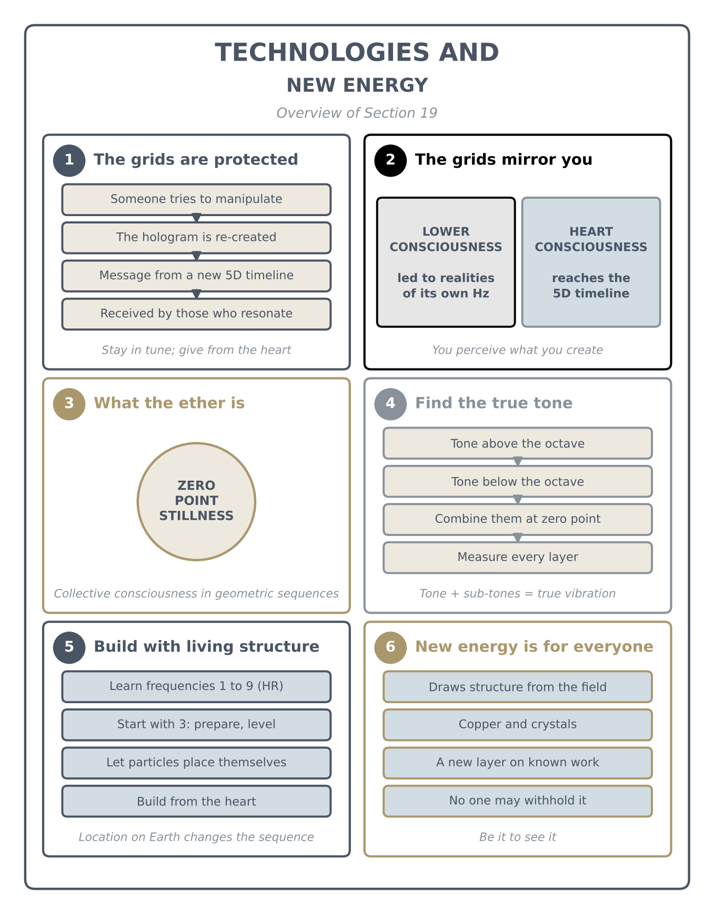

Technologies & New Energy
A message about protecting the grids, then ether technologies: what the ether is, how to find a molecule's true tone, how to build with living structure, and a new free-energy layer (live talk with questions)

Key teachings
19.1The message: the grids are protected
The talk begins with a memorandum from the 11-dimensional beings and the Council of Nine. Its points:
• A reality was re-created. Because certain individuals continued their negative deeds and tried to manipulate the grids, the guidance exited one holographic reality and re-created another, to keep the integrity of the grids. So this message comes from the fifth-dimensional intergalactic timeline.
• The new grids can't be restructured from a lower consciousness. The portals don't let such beings into the fifth-dimensional realities. They may think they are in, but the grids only take them to realities matching their own vibration in hertz. They live in a deception of their own making, because the grids mirror each structure precisely: whatever you create is exactly what you perceive.
• What to do: stay in tune with your higher self, give to all from your heart, and stay positive. Don't watch TV, because full disclosure is happening now in the fifth-dimensional heart structure.
• What is coming: the Pleiadians and Lemurians have new sequences; those connected with these timelines receive a new code frequency to upgrade their DNA and RNA. Those ready for contact with their star families are being activated for first physical contact. War may increase for those who choose it, but the planet will "swallow all the negative input." Humanity will become free "from the people, not from the government." We are one; collaborate now.
19.2Why the messages moved timelines
When someone manipulates a timeline, the guidance can shift its messages into a completely different holographic timeline so the new messages keep coming. If you resonate at that frequency, you receive them there. The old timeline can't carry them any more, because it is a different structure of consciousness.
Ascension is under way, so the structure has to be adjusted from the positive side; otherwise the constant negative input from a timeline that doesn't resonate with you would keep interfering. That is why the guidance looks after the grids: we can't simply be "left to the wolves." They interact because, through our higher mind, we gave permission for that help (see 17.3).
Those who kept to their negative deeds lost something too. They had been given warnings, and the chance of another timeline in which to continue their journey and ascend. Having refused it, they now go back to source, to the last particle, and start everything again from the beginning.
Even this is an illusion, because everything coexists at once: consciousness splits, and the negative and the positive exist at the same time. What you perceive is what you tune yourself into, moment to moment, depending on how you behave (see 1.3, 18.7).
19.3What the ether is
The ether systems are described as our collective consciousness of vibrational geometric sequences. These collective structures are built in sequences of "3 by 4 to 5" vibrational resonances (the talk gives the numbers without explaining them further).
The ether is made from the last nanoparticle: both the lowest and the highest structure of the zero point. Everything in the universe is built from the zero point, because the zero point is the stillness from which every structure is built (see 2.1).
19.4Finding a molecule's true tone
Before you can build with the ether, you need to know the vibrational sequence of the last particle that everything in front of you vibrates on, whether it is matter or not. Every molecule has its own sub-tone, a sound you can record.
Each tone has a partner: a tone running above the octave and, at the same time, a tone running below it. Combine the two and you reach the zero point; from there you measure the exact vibration. Because structures are always moving and merging, one tone holds many layers of vibration, and you have to discover them all. Combining the tone with its sub-tones gives the true vibration of that molecule, because it brings every parallel vibration of it into one zero-point moment. That true tone is what you record when you want to turn something from matter into an energy field.
The talk calls this information advanced, but says now is the time for it: scientists who are asking these questions will find it through synchronicity. All information comes from parallel realities you can engage with or not, depending on the level your consciousness is running at (see 15.2).

19.5Building with a living structure
Learn what each frequency means. The Harmonic Reactor lists the frequencies from 1 to 9 and what each one does in the quantum field; study them. For example, 3 is stillness and preparation: it levels everything already in the field so that new sequences can come in without restriction or manipulation.
Learn how they combine. Numbers combine into new frequencies (1 and 2 make 12 Hz, for example), and each combination gives a particular position in the quantum field. The quantum computer algorithm helps you construct and deconstruct these combinations.
Not one particle out of place. When you work with nanoparticles and ether technology, not one particle can be out of place, because it is a living structure mimicking the whole quantum field. Ether technology runs on living conscious sequences, so you don't force the particles: you allow the system to choose its own positions, which it knows how to do through the magnetic and gravitational fields.
Location matters. Ether technology differs depending on where on Earth it is built, because each location (each parallel reality) has its own sounds and resonances.
Build from the heart. Builders need a meditative state that comes from the heart, resonating at a higher frequency, because ether technology works without friction, mimics the whole quantum field, and mimics your own consciousness.
19.6New technology belongs to everyone
The talk says some of this technology was already described by a scientist but held back, because certain government interests try to block it. The answer is the same as always: you create your reality moment to moment, so believe these technologies are already available, and you build an Earth where they are. You are the ether, the consciousness, constructing and deconstructing. "Be it in order to see it, not see it to be it."
These technologies are given in the name of all humanity. No one has the right to withhold them; let humanity decide what to use. A newer technology will also be given, on top of this, to the right scientists, so the negativity and competition must end (see 18.5).
19.7The free-energy device
At the end, a drawing received a few months earlier was shown. Described in words: it is based on a full circle cut in half, with the two ends twisted in opposite directions, leaving a hole in the middle, with another circle and opening below. It can be made of copper, and it also uses crystals (crystallized structure).
Asked whether it was a communication or "stargate" tool, the answer was no: it is a free-energy technology that extracts structures from the quantum field. A scientist had already spoken about part of the design; the guidance then added more on top of it, because, as said before, no single scientist has the whole picture. This is another layer of it.
The recording ends as the reason for this extra layer was about to be explained. The drawing itself isn't included in the transcript, so it isn't reproduced here.
The method — Approach Ether Technology
For anyone studying or building in this area, in the order the talk gives:
- Get into the heart first. Meditate until you resonate from the heart; the technology mimics your consciousness.
- Learn the frequencies 1 to 9 and what each means (HR's frequency chapter).
- Find the true tone of what you work with: the tone above and below the octave, combined at zero point, with every layer measured.
- Start with 3 to level and prepare the field, so new sequences come in without restriction.
- Learn the combinations and their positions in the field; use the quantum computer algorithm to construct and deconstruct.
- Let the structure place itself. It is alive; don't force a single particle.
- Allow for location. The sequence changes with where on Earth you build.
- Share it. Collaborate, and don't withhold it from humanity.